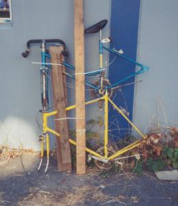

|
Tallbike construction - how hard can it be? Put one bike on top of another and weld them together. Make sure that the headtubes are aligned. Putting the rider forward of the rear hub is even more important than on a chopper, because that ass is on a long rotation arm. Make some kind of jig (at right, some two by fours cinched with zipties) if you want them to be straight, but so long as the chainrings are angled closely enough to keep the chain on, a bent frame doesn't matter as much, because there's a lot of correction time when the rider is so far from the pavement. When I met some riders from the Hard Times Bike Club, I noticed that they had welded little flanges to their left chainstays to aid in climbing up. How silly, I thought, I shall continue to hoist myself aboard directly with my left foot on the pedal. Now I'm over 30, and I'm making those little flanges also, because my knees don't do so well with all of that lifting up and jumping down. Incidentally, the first diamond frame "safety" bicycles had these little flanges as well, vestigial parts from the highwheeler frames. They were needed to leap onto the saddle of a highwheeler, and the sporty lads of the day continued to mount their safeties by vaulting over the rear wheel in the same way. |
 |
(Return to C.H.U.N.K. Technical Documentation)
| Copyright 2003 Megulon Five <megulon5@dclxvi.org>. |
|
This work is licensed under a Creative Commons License. | Last modified 10 February 2003. |